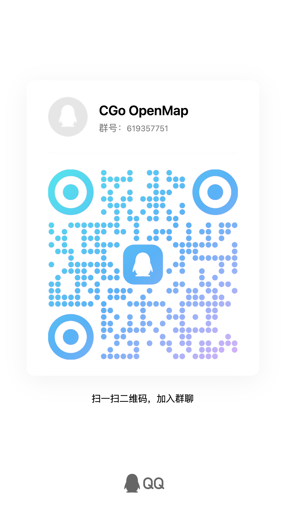

核心架构与平台特性
轻量、现代化的开源城市轨道交通交互线路图引擎，内置北京、沈阳、青岛、合肥等城市线网参考范例，支持快速移植任意城市。
地图基础操作
- 缩放地图：支持鼠标滚轮、触控板手势、双指捏合或界面缩放按钮
- 自由平移：自由拖拽漫游浏览线网，支持边界弹性回弹
- 深色模式：内置深色与浅色双重主题，支持跟随系统或手动锁定
可定制模块化车站信息板
- 模块化注册架构：支持城市主理人按需定制、独立开关、排序与跨选项卡调度
- 文旅与名胜指引：定制展现车站周边历史人文、名胜古迹、商圈打卡与游览路线
- 运行时刻与进站预估：支持首末班车时刻查询、全天运行表与实时/预计列车进站时间看板
- 立体换乘与接驳空间：精细呈现同台/通道/虚拟换乘走行耗时、地面微循环公交、打车及 P+R 停车场
- 站台结构与设施指南：直观展示岛侧站台布局、无障碍垂直电梯、楼扶梯、母婴关爱室与 AED 急救分布
多维智能检索
- 多维匹配：支持中英文站名、拼音缩写、多音字及历史更名检索
- 智能聚焦：点击搜索结果平滑飞跃并居中高亮选中车站
- 线路徽标：搜索结果实时呈现线路徽标与换乘标识
地理位置与导航服务
- 最近车站查找：基于 GPS 定位自动计算并推荐距离最近的地铁站
- 一键导航接驳：支持一键跳转高德地图规划路径及火车站 12306 购票
多城市解耦架构
- 引擎与数据分离：核心渲染引擎与城市业务数据完全解耦
- 标准化数据目录：城市数据采用独立配置清单，极简清晰
- 城市专属主题色：支持配置专属 `themeColor` 衍生全套深浅配色，城市间色彩彻底隔离
- 多城市一键接入：在城市注册中心注册即可扩展全国各大城市
矢量美学与特色徽标
- 纯矢量 SVG 渲染：全高清矢量绘制，任何缩放比例下均清晰锐利
- 城市官方矢量徽标：支持在注册表中登记城市官方 SVG 徽标（`svglogo`），首页卡片等大保真渲染
- 文化特色徽标：支持重点地标文化车站（如故宫、天坛等）专属图标
- 精致版式排版：站名智能多向对齐与避让，还原轨道交通图设计感
轻量原生与 PWA 离线
- 零重型框架依赖：纯原生 Web 技术驱动，首屏毫秒级加载
- PWA 独立运行：支持桌面与移动设备一键安装至主屏幕全屏运行
- 离线数据缓存：Service Worker 自动缓存核心资源，保障弱网可用
开放开源与生态共建
- 双轨开源架构：代码采用 GNU AGPLv3，城市数据采用 ODbL 1.0 / CC BY-SA 4.0
- 城市主理人机制：合入主库尊享 UI 与文档永久署名，享官方底层引擎升级保障
- 完备文档与指引：提供移植手册与贡献指南，支持零基础 AI 辅助制图
🍺
Drunk 智能转换系统
测试版- 底图与工程直通：支持位图图片、矢量 PDF 及 Illustrator (.ai) 工程
- AI 视觉拓扑解析：浏览器直连 DeepSeek 官方多模态视觉大模型
- 知识库动态对齐：联网维基百科动态校对站名并补齐中英双语
- 可视化排版微调：8 方向文字轮盘避让、幽灵底图比对与 45°/90° 正交吸附
- 标准工程代码导出：内置 5 项数据完整性铁律自检，一键生成全套城市代码
- 早期测试与共建说明：Drunk 系统为早期开发验证阶段，仅供测试使用。极其欢迎开发者共同开发！

欢迎轨道交通爱好者、前端技术开发者与各地城市主理人加入！共同交流城市线网规划、数据移植、拓扑算法与使用反馈。
可手机 QQ 扫码或直接点击右侧一键直达加群。